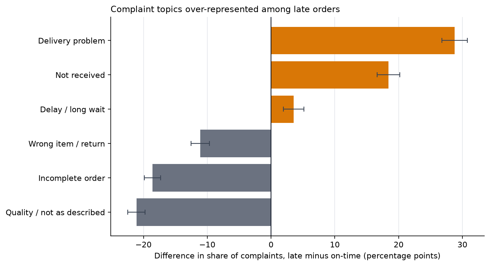
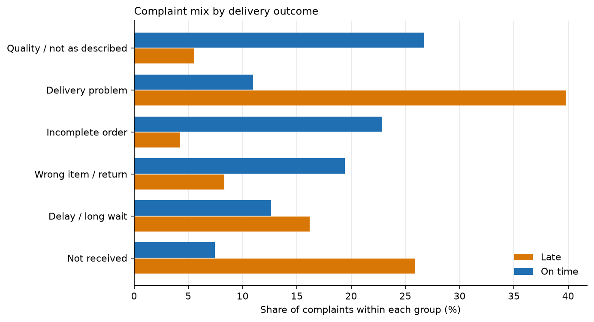

03 · Voice of the Customer
What 9,139 written complaints are about, and how late orders differ
This is the third project on the Olist Brazilian e-commerce dataset. Project 01 measured late delivery from the order side and found it was the strongest signal of dissatisfaction. This project reads the other side: the Portuguese text that customers actually wrote.
The question is what customers complain about, and whether that changes when the parcel arrives late. The short answer is that it changes almost completely. Late complaints are about the parcel. On-time complaints are about the product.
Every number below comes from the tested marts in projects/01-retail-analytics/dbt_project and is produced by one script, projects/03-voice-of-customer/scripts/analyze_reviews.py. The script writes the tables and figures this page uses.
Executive summary
- 9,139 usable complaints were written on 1–2 stars about delivered orders: 2,711 from late orders and 6,428 from on-time orders.
- Late complaints are overwhelmingly about delivery. Delivery problems are 39.8% of late complaints against 11.0% of on-time complaints (+28.8 pp). Non-receipt is 25.9% against 7.5% (+18.4 pp), and delay is 16.2% against 12.6% (+3.6 pp). Every interval excludes zero.
- On-time complaints are overwhelmingly about the product. Quality or “not as described” is 26.7% of on-time complaints against 5.6% of late ones (−21.1 pp). Incomplete orders are 22.8% against 4.2% (−18.6 pp), and wrong item, defect or return is 19.4% against 8.3% (−11.1 pp).
- Grouping the topics by hand makes the split starker. The three logistics topics account for 81.9% of late complaints and 31.1% of on-time complaints. The three product topics account for 18.1% of late complaints and 68.9% of on-time complaints. That grouping is an analyst’s summary, not a model output.
- This is a description of people who wrote complaints, not of all buyers. Late orders are 6.8% of deliveries but 29.7% of the complaint corpus, because late orders are both more likely to be reviewed and much more likely to be reviewed badly. The report compares the mix of complaints, and says so before showing any result.
1. Who is in the corpus
There are 99,224 review rows, but most orders have no written comment, and the ones that do are selected by the outcome. Restricting to delivered orders and to the latest review per order gives the population below.
| Outcome | Orders | With a comment | 1–2 star comments |
|---|---|---|---|
| On time | 89,941 | 35,138 (39.07%) | 6,490 (7.22%) |
| Late | 6,535 | 3,762 (57.57%) | 2,747 (42.04%) |
| All delivered | 96,476 | 38,900 (40.32%) | 9,237 (9.57%) |
The selection is the first finding, not a caveat added at the end. A late order is 1.47 times as likely to receive a written review as an on-time order, and a low-star review is 5.8 times as likely. Late orders are 6.8% of deliveries but 29.7% of the complaints we can read.
That makes two questions different:
- “What fraction of late orders produce a complaint?” is a question about review behaviour, and this dataset answers it only for people who chose to write.
- “Among the complaints that exist, what are late complaints about?” is a question about the text, and it is the one this project answers.
The corpus is the second question. It contains 9,237 low-star comments; 9,139 retain at least two tokens after normalisation (98 one-word verdicts such as “ruim” or “péssimo” are dropped). A further 3,039 low-star reviews carry no written comment at all and never enter.
2. How the topics were built
The method is deliberately simple and fixed before looking at the outcome.
- One review per delivered order, the latest by
review_created_atand thenreview_id. This is the same rulefct_ordersuses. Joining all 99,224 review rows directly would add 551 duplicate rows across 547 orders and inflate every denominator. - Keep 1–2 star reviews with a comment. The star rating is the negative signal. The model is not asked to discover sentiment; it is asked to describe what the complaint is about.
- Normalise conservatively. Lowercase, remove links, digits and punctuation, keep accents, and drop Portuguese function words plus seller names. Negation stays:
nãois the difference betweenrecebiandnão recebi, and removing it merged “received” and “never received” in an earlier fit. - Fit LDA with six topics on unigrams and bigrams (
min_df=20,max_df=0.5,random_state=0,max_iter=30). The delivery outcome is not an input; it is joined after the topics are fitted. - Assign each complaint to its highest-weight topic and label the topics from their top terms. The script checks that every topic still contains its anchor term and fails if a library upgrade reorders them.
Why six topics
Six was not chosen by perplexity. Perplexity falls as topics are added and is lowest at k=8, while UMass coherence — whether the top terms of a topic appear together in the corpus — is highest at k=6 among the seven candidates tested. Coherence is the criterion because perplexity mostly rewards spreading probability over frequent words; it does not say whether a topic is readable.
| Topics | Mean UMass coherence (top 10 terms) | Perplexity |
|---|---|---|
| 4 | −2.699 | 333.05 |
| 5 | −2.699 | 332.39 |
| 6 | −2.677 | 332.92 |
| 7 | −2.691 | 329.96 |
| 8 | −2.745 | 329.04 |
| 9 | −2.850 | 330.69 |
| 10 | −2.833 | 330.43 |
The margin over k=4, k=5 and k=7 is small: coherence alone does not prove that six is the one true number, only that it is the best of the candidates under this corpus and preprocessing. The labels remain a human interpretation of the terms, and two pairs overlap: “delivery problem” and “delay” both concern delivery, and “not received” and “delay” share vocabulary.
How stable are the topics?
Refitting with four other seeds (1–4) gives a mean adjusted Rand index of 0.258 against the published seed-0 partition (range 0.234–0.283), and mean top-10-term Jaccard overlap of 0.413 (range 0.176–0.818 after one-to-one matching). That is low: the exact partition is not stable across initialisations. The per-topic Jaccard values show what survives and what does not:
| Topic | Mean top-term Jaccard across seeds |
|---|---|
| Quality / not as described | 0.255 |
| Not received | 0.581 |
| Incomplete order | 0.548 |
| Delivery problem | 0.509 |
| Delay / long wait | 0.292 |
| Wrong item / return | 0.292 |
The logistics/product grouping is more robust than the exact boundaries. In each alternative seed, every logistics topic has a late share between 27% and 67%, while every product topic stays between 6% and 25%. The main finding — late complaints are about delivery, on-time complaints about the product — survives; the six specific labels and the exact percentages should not be read as fixed categories.
Mixed complaints and hard assignment
LDA returns a distribution over topics for every complaint; the tables above use only the largest weight. That is a simplification, and it is measurable: 22.7% of complaints have a largest topic weight below 0.5, 7.5% below 0.4, and 31.7% have a second topic at or above 0.3. The mean normalised entropy is 0.522 on a 0–1 scale. A complaint about a late, damaged, incomplete order often has substantial mass on more than one theme.
The themes are recognisable in the raw text: damaged or different from the photo (quality), still waiting a month later (not received), ordered two and received one (incomplete), promised date passed or tracking says delivered but nothing arrived (delivery problem), “almost a month, other sites are faster” (delay), and wrong voltage or wrong item with no exchange (wrong item/return).
To test whether that readability holds beyond the highest-weight examples, I drew a stratified random sample of five complaints per topic (30 total, seed 20261107) and read each one.
| Topic | Clearly consistent | Partly consistent | Dominated by another theme |
|---|---|---|---|
| Quality / not as described | 5 | 0 | 0 |
| Not received | 3 | 2 | 0 |
| Incomplete order | 4 | 0 | 1 |
| Delivery problem | 3 | 1 | 1 |
| Delay / long wait | 2 | 0 | 3 |
| Wrong item / return | 3 | 2 | 0 |
| Total | 20 | 5 | 5 |
The labels are readable but not reliable at the individual level: 20 of 30 were clearly consistent, 5 were partly consistent, and 5 were dominated by another theme. The delay topic was the weakest — three of its five sampled complaints were mainly about product quality or wrong items — which matches its low seed stability. This is one analyst’s review, not independent human coding, and 30 complaints cannot estimate label accuracy with useful precision. It supports the broad reading of the corpus, not the exact assignment of an individual complaint.
Using the full topic distribution instead of only the largest weight gives the same picture. Across the corpus, the three logistics topics account for 75.1% of the mean topic weight in late complaints against 36.9% in on-time complaints; the three product topics account for 24.9% against 63.1%. The hard-assignment gaps in the table are larger, but the direction does not depend on forcing each complaint into one topic.
| Topic | Most frequent terms (after normalisation) | Complaints |
|---|---|---|
| Product quality or not as described | produto, veio, nao, qualidade, cor, gostei, diferente, quero | 1,866 |
| Delivery problem (promise or carrier) | produto, entregue, entrega, prazo, dia, chegou, não entregue, não chegou | 1,784 |
| Incomplete order (missing items) | comprei, recebi, apenas, dois, produtos, pedido, duas, nota | 1,581 |
| Wrong item, defect or return | produto, veio, comprei, contato, outro, troca, errado, defeito | 1,475 |
| Delay and long wait | produto, estou, recomendo, loja, entrega, não recomendo, compra, aguardando | 1,251 |
| Not received (still waiting) | recebi, não recebi, produto, ainda, recebi produto, ainda não, nao, produto ainda | 1,182 |
The words are evidence of what each topic is about, not a causal explanation. “Correios” appears in the delivery-problem topic, but the dataset has no carrier identifier, so the topic cannot establish who caused a delay.
3. What changes when the parcel is late
The comparison is compositional: each topic’s share of late complaints against its share of on-time complaints. The two denominators are different populations (2,711 late complaints and 6,428 on-time complaints), and the difference is in percentage points.
| Topic | All complaints | Share of late | Share of on-time | Difference | 95% CI | q (BH) |
|---|---|---|---|---|---|---|
| Product quality or not as described | 1,866 (20.4%) | 5.6% | 26.7% | −21.1 pp | −22.5 to −19.7 | < 0.001 |
| Delivery problem (promise or carrier) | 1,784 (19.5%) | 39.8% | 11.0% | +28.8 pp | +26.8 to +30.8 | < 0.001 |
| Incomplete order (missing items) | 1,581 (17.3%) | 4.2% | 22.8% | −18.6 pp | −19.8 to −17.3 | < 0.001 |
| Wrong item, defect or return | 1,475 (16.1%) | 8.3% | 19.4% | −11.1 pp | −12.5 to −9.7 | < 0.001 |
| Delay and long wait | 1,251 (13.7%) | 16.2% | 12.6% | +3.6 pp | +2.0 to +5.2 | < 0.001 |
| Not received (still waiting) | 1,182 (12.9%) | 25.9% | 7.5% | +18.4 pp | +16.7 to +20.2 | < 0.001 |


The late complaints are about the parcel. Delivery problem, non-receipt and delay together are 81.9% of late complaints, against 31.1% of on-time complaints. The largest single gap is “delivery problem” at +28.8 pp. This is what Project 01 found from delivery timestamps, now said in the customers’ own words: when an order is late, the complaint is about the delivery, not about the merchandise.
The on-time complaints are about the product. Quality or “not as described” alone is 26.7% of on-time complaints. Incomplete orders are 22.8%, and wrong item, defect or return is 19.4%. These are 1,715, 1,466 and 1,249 complaints respectively, and they occur on orders that met the promise. A customer who receives the wrong colour, a missing item or a damaged product complains about the product even when the parcel arrived on time.
The operational implication is two queues, not one. Reducing lateness would remove the largest source of late complaints, but it would not touch the product and completeness complaints that dominate the on-time group. The two problems have different owners and different fixes. That is a more useful conclusion than a single sentiment score, and it is visible only because the corpus was split by outcome after the topics were fitted.
4. What the data cannot support
- No causal claim. A topic being more common among late complaints is an association between a delivery outcome and the subject of a complaint. The data cannot show that lateness caused a particular complaint, and the selected corpus makes even the association descriptive of complainers.
- No claim about all customers. 57.6% of late orders have a comment against 39.1% of on-time orders. The people who write are not a random sample, and nothing here estimates the complaint mix of the silent majority.
- No claim about positive experience. Only 1–2 star reviews are modelled. The analysis says what dissatisfied people complained about, not what satisfied people valued.
- Topics are a simplification. Six topics, hard assignment, bag-of-words features, subjective labels, and overlapping categories. The seed-stability check above shows that the exact partition is not stable even though the broad logistics/product grouping is. A complaint about a late, damaged, incomplete order is forced into one topic, and 22.7% of complaints have a largest weight below 0.5. Different values of k would produce a different but not necessarily wrong partition.
- One marketplace and one period. Olist, September 2016 to October 2018. The vocabulary and the delivery operation are specific to it.
- The label is the promise, not the carrier scan.
is_latemeans the delivered timestamp is after the promised date. The dataset has no carrier identifier, no route and no warehouse, so “delivery problem” cannot be assigned to a responsible party.
5. Reproduce it
uv run python tasks.py topics # fit the model, write tables and figures
uv run pytest # 40 tests, no database or network neededThe script reads the built marts, so the pipeline order is load → dbt-build → topics. It writes:
projects/03-voice-of-customer/reports/review_scope.json— scope and model metadata, including perplexity and mean topic weight by outcome.projects/03-voice-of-customer/reports/topic_terms.csv— the twelve top terms for each topic.projects/03-voice-of-customer/reports/topic_prevalence.csv— the table above, with exact p-values and confidence bounds.projects/03-voice-of-customer/reports/topic_selection.csv— coherence and perplexity for k=4–10; the script stops if coherence no longer selects k=6.site/reports/03-voice-of-customer/figures/*.png— the two figures, in English and Portuguese.
The model is deterministic given the pinned scikit-learn version, the seed and the fixed corpus. The topic anchors are checked at runtime, so a library upgrade that reorders the topics fails the task instead of silently relabelling them.